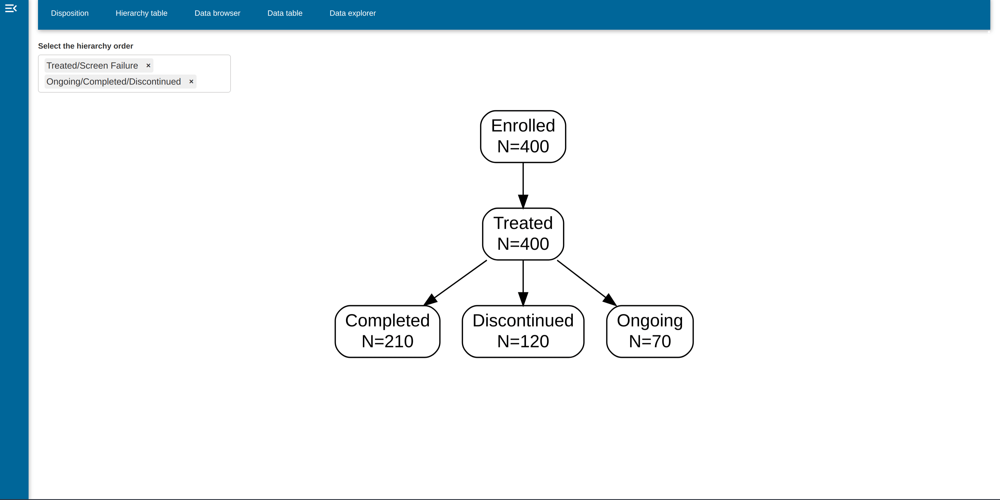

dv.manager package is designed to make it quick and easy to create and deploy Shiny applications using the modules from DaVinci.

Installation
if (!require("remotes")) install.packages("remotes")
remotes::install_github("Boehringer-Ingelheim/dv.manager")